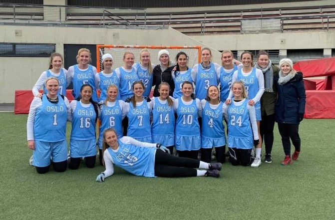

Lacrosse er en idrett med lang og stolt historie, helt tilbake til 1600-tallet. Dens opphav var som et spill mellom ulike indianerstammer i Nord Amerika og idrettens seremonier er fremdeles preget av indianske tradisjoner.

Idretten er en lagbasert ballsport som spilles med ti spillere på hvert lag, på en bane omtrent av samme størrelse som en vanlig fotballbane. Det finnes også innendørs lacrosse, kalt indoor eller box lacrosse. Spillerne er utstyrt med køller med en nettlomme i enden (la crosse) som brukes til å fange og kaste ballen mellom spillerne og i mål.

For kvinner er spillet noe annerledes. Nettlommen på crossen er ikke tillatt så dyp som for gutter – dette gjør det enklere å slå ballen ut. Reglene for fysisk kontakt er også mye strengere og jentene bruker dermed mindre beskyttelsesutstyr.

Lacrosse i Norge vokser og det er i dag ca 1.000 aktive spillere i forbundets 16 medlemsklubber. Klubbene er i stor grad tilknyttet universitet og høyskoler, men det er også frittstående klubber. Seriespillet foregår i flere byer som helgeturneringer, med kvalifisering til Norgesmesterskapet som er i juni.